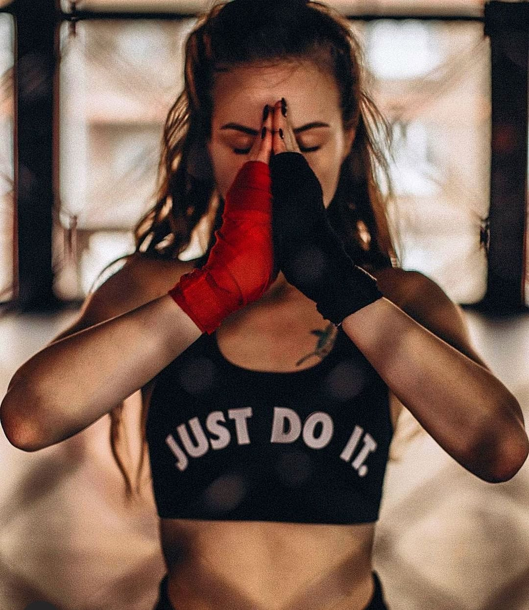
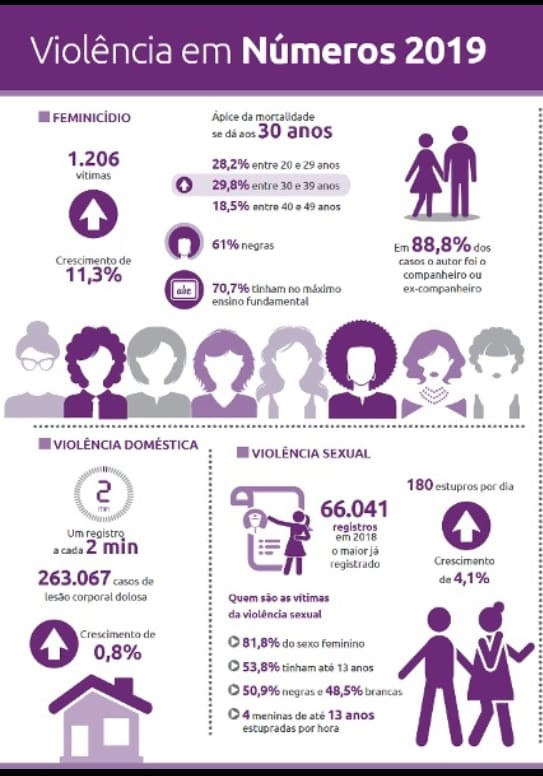
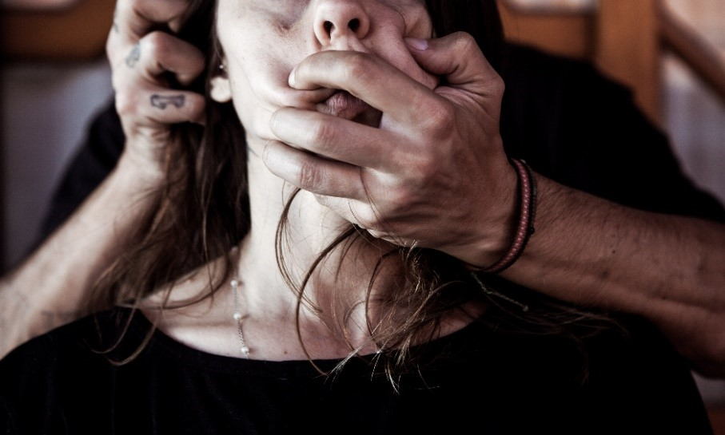
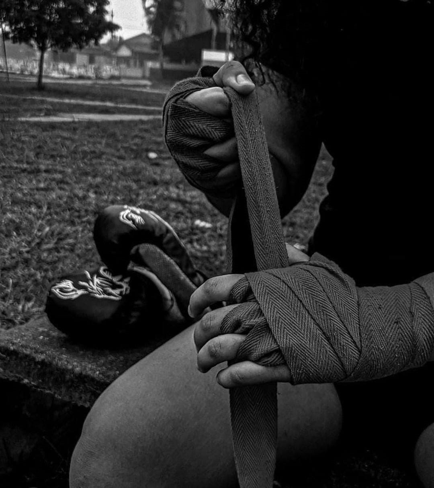

Lute como uma garota
As mulheres estão encontrando seu espaço no mundo das artes marciais buscando a autoconfiança e defesa pessoal.
O mundo das lutas era dominado pelo público masculino, até então bem machista. A predominância masculina era visível até algum tempo atrás, tanto quem consumia, quanto quem o praticava. Todavia nos últimos anos, essa ideia está se transformando gradativamente, as mulheres vêm mostrando a sua força e habilidade nessa prática esportiva. Hoje as artes marciais têm se configurado como um instrumento social e principalmente educacional conseguindo assim receber muito bem o público feminino. Já não é mais de se espantar ao ver mulheres praticando tais esportes, tidos por muitos como violento e agressivo.
O mundo das artes marciais está mais preparado do que antes para receber as mulheres, agora elas têm seus espaços para se desenvolverem e são respeitadas, hoje o convívio entre homens e mulheres nessa área é perfeito. As lutas apresentam resultados ótimos não só como bons exercícios físicos, mas também como uma forma de as mulheres conhecerem todo o seu potencial físico e muitas vezes mental, além de romperem com aquela ideia de serem "sexo frágil".
A participação das mulheres no mundo das lutas só traz contribuição aos esportes. As mulheres e crianças conseguem levar uma energia diferente aos treinos que normalmente fica em falta no universo exclusivamente masculino. No local onde a mulher e a criança estão presentes aparenta ser um ambiente respeitável, expressa dignidade, a presença da mulher impõe respeito e o clima se torna mais suave.
Como um dos pontos para a mulher querer entrar nas artes marciais é a busca por defesa pessoal. É necessário se ter o conhecimento dos dados sobre a violência doméstica e o feminicídio no Brasil a fim de que as pessoas compreendam a importância das lutas na vida das mulheres para que elas aprendam o básico de como se defender em casos de agressão.
O 13ª Anuário Brasileiro de Segurança Pública, divulgado em setembro do ano passado, registrou recorde da violência sexual. Foram 66 mil vítimas de estupro no Brasil em 2018, maior índice desde 2007 quando o estudo começou a ser feito. A maioria das vítimas (53,8%) foram meninas de até 13 anos. Conforme a estatística, apurada em microdados das secretarias de Segurança Pública de todos os estados e do Distrito Federal, quatro meninas até essa idade são estupradas por hora no país. Ocorrem em média 180 estupros por dia no Brasil, 4,1% acima do verificado em 2017 pelo anuário.
Segundo a pesquisadora do Fórum Brasileiro de Segurança Pública, Cristina Neme, "o perfil do agressor é de uma pessoa muito próxima da vítima, muitas vezes seu familiar", como pai, avô e padrasto conforme identificado em outras edições do anuário. O fórum é o órgão responsável pela publicação do anuário.
De cada dez estupros, oito ocorrem contra meninas e mulheres e dois contra meninos e homens. A maioria das mulheres violadas (50,9%) são negras. Em 2018, 1.206 mulheres foram vítimas de feminicídio, alta de 4% em relação ao ano anterior. De cada dez mulheres mortas seis eram negras. A faixa etária das vítimas é mais diluída, 28,2% tem entre 20 e 29 anos, 29,8% entre 30 e 39 anos. E 18,5% entre 40 e 49 anos. Nove em cada dez assassinos de mulheres são companheiros ou ex-companheiros.
Feminicídio é o assassinato de uma mulher, cometido devido ao desprezo que o autor do crime sente quanto à identidade de gênero da vítima .Na primeira atualização de um relatório produzido a pedido do Banco Mundial, o Fórum Brasileiro de Segurança Pública (FBSP) aponta que os casos de feminicídio cresceram 22,2%, entre março e abril deste ano, em 12 estados do país, comparativamente ao ano passado. Nos meses de março e abril, o número de feminicídios subiu de 117 para 143.
Em comunicado à imprensa, a entidade novamente torna públicos registros que confirmam decaimento na abertura de boletins de ocorrência, demonstrando que, ao mesmo tempo em que as mulheres estão mais vulneráveis durante a crise atual do covid-19, têm mais dificuldade para formalizar queixa contra os agressores e, portanto, para se proteger.
Um dos fatores que explicam essa situação é a convivência mais próxima dos agressores. Devido à necessidade de confinamento residencial podem mais facilmente impedi-las de se dirigir a uma delegacia ou a outros locais que prestam socorro ás vítimas, como centros de referência especializados, ou, inclusive, de acessar canais alternativos de denúncia, como telefone ou aplicativos. Por essa razão, especialistas consideram que a estatística se afasta da realidade vivida pela população feminina quando o assunto é violência doméstica, que, em condições normais, já é marcada pela subnotificação.
Os benefícios oferecidos pelas artes marciais são bons tanto para homens quanto para mulheres, mas no caso delas as vantagens se mostram superiores. O principal motivo feminino da procura pelas artes marciais como mencionado anteriormente é aprender a se defender. Principalmente criando a autoconfiança, para que se sintam mais confiantes em andar sozinhas, porque hoje a mulher tem um medo constante quando está andando nas ruas de ser agredida, de sofrer violência, de estupro, de assalto, então elas precisam ter uma noção de como se virar em caso de emergência. Ao aprenderem a lutar e se defender elas se colocam fisicamente em pé de igualdade com os homens, ou mesmo os ultrapassam devido à dedicação e técnica.
Toda mulher tem que saber autodefesa, para o bem dela mesma. Pelo menos o conhecimento básico é essencial pois o próprio parceiro pode ser um lobo em pele de cordeiro e quando cair a máscara, ela vai precisar fazer algo para se proteger.
A mulheres estão descobrindo que podem praticar lutas, que antigamente as pessoas achavam que elas não levavam jeito, por serem meio atrapalhas, por serem frágeis e delicadas, que era coisa de homem, mas elas começaram a notar que a luta além de ajudar no físico e na saúde, dão a elas o “poder” de contra-atacar quando eram provocadas, perceberam também que possuem a capacidade de aprender golpes corretamente, técnicas. Podendo assim se sentir mais seguras e confiantes de si.
Quem escreveu este artigo?
Camilly Stainer Naves Silva, 17 anos, estudante, hoje no terceiro ano do Ensino Médio. Sua maior paixão são as artes marciais, atualmente pratica o Muay thai arte marcial originária da Tailândia, pretende mudar para outras modalidades posteriormente, como o Jiu-jítsu. Planeja cursar medicina com o intuito de ajudar sempre o máximo de pessoas que puder.
Referências
Aluno(a): Camilly Stainer Naves Silva